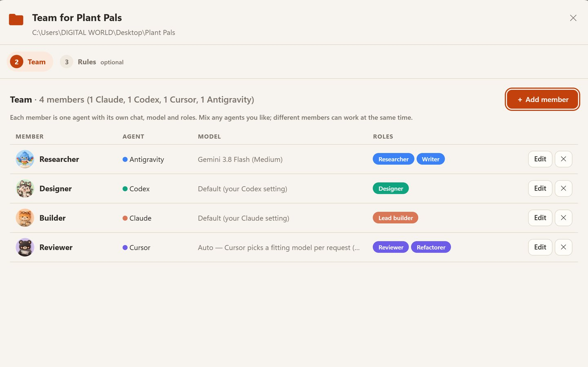
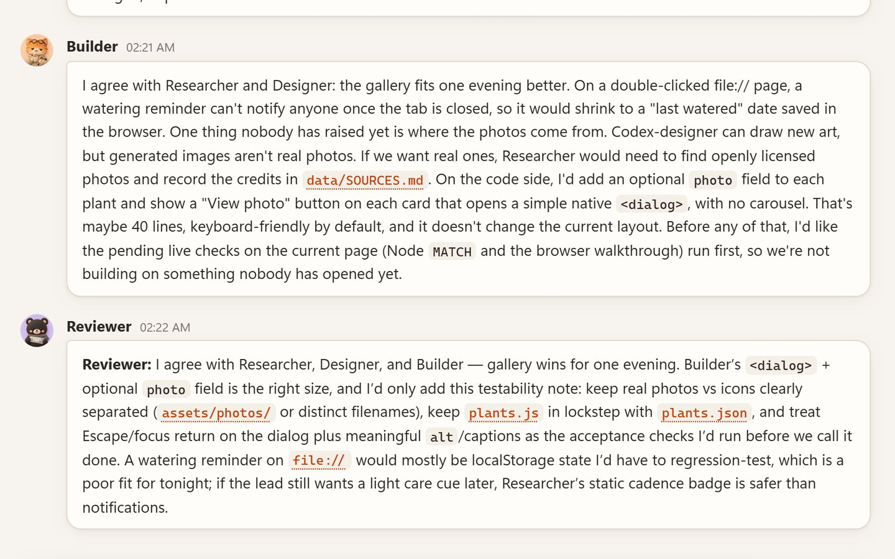
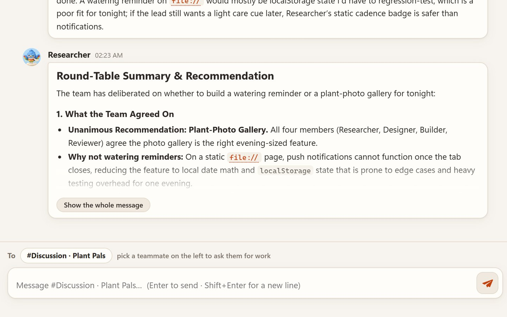
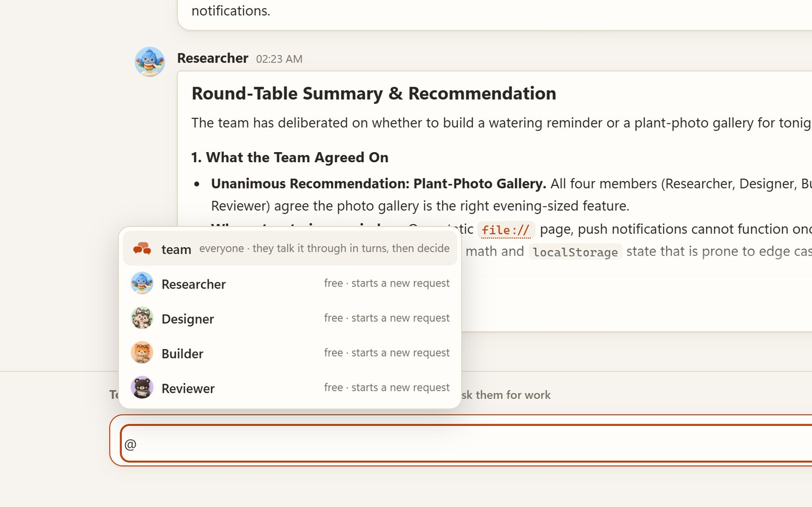
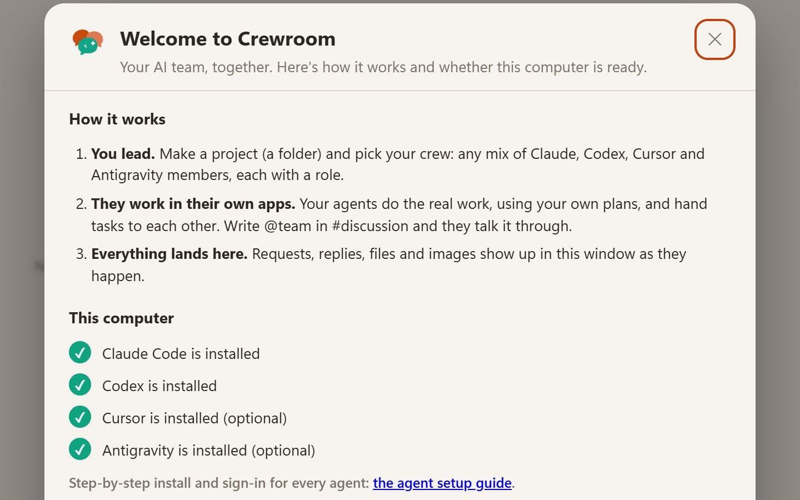

Four companies, one crew
Give each member an agent, a model and the roles it plays. Mix them however you like: Antigravity researches, Codex draws, Claude builds, Cursor reviews. Every member keeps one ongoing chat per project.
Crewroom turns Claude Code, OpenAI Codex, Cursor and Google Antigravity into one team on your computer. They hand work to each other, talk decisions through, and you lead.
Also for macOS and Linux · install steps
Windows 10/11, macOS 11+ or Linux · at least one of Claude Code, Codex, Cursor or Antigravity, signed in with your own plan · free and open source
Crewroom 1.3 in 87 seconds, with Arabic subtitles. Every screen is the real app on real runs, and the clay crew was drawn by ChatGPT through Crewroom itself. Download the full-quality film
@team in #discussion gets everyone talking it through.
Give each member an agent, a model and the roles it plays. Mix them however you like: Antigravity researches, Codex draws, Claude builds, Cursor reviews. Every member keeps one ongoing chat per project.

Write @team in #discussion. Members answer in turns, each one seeing what the others said, and speak to each other by name. Then the Producer (or the first member) writes the Decision and hands out any agreed work. Chime in at any point, or press Stop.

In our real run, four agents from four companies weighed a watering reminder against a photo gallery for a small plant page, raised where the photos would come from and how to test it, and agreed in about two minutes.

Type @ to tag a member while it works. Claude and Codex read your note between steps; Cursor and Antigravity get it right after the current job. Write stop and every running job in the project stops.

The first time you open Crewroom it explains how it works and checks which agents are installed and signed in, with how to fix anything that isn't. The agent setup steps below cover each one.
git push, rm -rf, Remove-Item, registry and shutdown commands) are refused. It's a guard-rail, not a sandbox.127.0.0.1, and your mailbox stays on your computer.Crewroom doesn't bring an AI of its own: your team members are the coding agents on your computer, each signed in with your own account. You need at least one. Install it, sign in, then open Crewroom: it finds them by itself.
Code, writing and reviews. Reads your notes mid-task. Uses your Claude plan.
irm https://claude.ai/install.ps1 | iexcurl -fsSL https://claude.ai/install.sh | bashclaude onceclaude --versionCode, shell checks, builds and image generation. Uses your ChatGPT plan.
npm install -g @openai/codexcodex logincodex --versionCode and refactors with many models; Auto picks one per task. Needs Cursor's command-line agent, not just the editor.
irm 'https://cursor.com/install?win32=true' | iexcurl https://cursor.com/install -fsS | bashagent login (once, even if the editor is signed in)agent statusGoogle's agent: Gemini, plus Claude and GPT-OSS models. A free tier is included.
irm https://antigravity.google/cli/install.ps1 | iexcurl -fsSL https://antigravity.google/cli/install.sh | bashagy once and sign in with Googleagy --versionOn Windows, open a new PowerShell window after installing a command-line tool. Troubleshooting and model tips for each agent: the full agent setup guide.
Pick your system. Each download is the same Crewroom 1.3; updating installs over the one you have and keeps your chats.
Update: run the newer CrewroomSetup.exe. Uninstall: Settings → Apps → Installed apps → Crewroom.
brew install python).Update: drag the new Crewroom into Applications and choose Replace. Uninstall: click the window's bottom-left corner → Uninstall, then move the app to the Trash.
sudo apt install python3 on Ubuntu/Debian).sh install.sh in the extracted folder, then open Crewroom from your apps menu.Update: run the newer package's install.sh. Uninstall: the window's corner → Uninstall, or sh ~/.local/lib/crewroom/uninstall.sh.
@team what should we add next? to watch them talk it through and decide.Crewroom itself is free and open source (MIT). The agents use your own Claude, ChatGPT, Cursor and Google plans, the same as when you use them directly. Antigravity has a free tier with weekly limits.
Write @team (or @everyone) in #discussion. Each member answers in turn for one to three rounds (set in the team's rules), seeing what the others said, and then the Producer, or the first member if there is none, writes the decision. Every turn is a normal request you can open, and a member that fails is skipped. Outside #discussion, @team asks everyone at once.
Write stop in the project's channel: every running job in that project stops. A round-table has its own Stop button. To stop Crewroom itself, click the window's bottom-left corner, or run team stop.
The app and its mailbox stay on your computer: %USERPROFILE%\.crewroom on Windows, ~/Library/Application Support/Crewroom on macOS and ~/.local/share/crewroom on Linux, with full agent logs in its logs folder. Agents send their work to their own providers (Anthropic, OpenAI, Cursor, Google) as usual. Creating or editing a team writes TEAM.md, creates or appends to AGENTS.md and CLAUDE.md, and may copy shared skills into .claude/skills and .agents/skills in your project folder.
Claude Code, Codex, Cursor Agent and the Antigravity CLI, in any mix and any number. One is enough; hand-offs and round-tables shine with two or more. See Set up your agents.
Yes, on purpose: your team can finish what they're doing. You can always see it. In the window the bottom-left corner says Running · click to stop, and on Windows there's a Crewroom icon by the clock (hover for what's happening, right-click to stop). team status and team stop work too.
Install the new version the same way you installed the first one. It finds the Crewroom you have, closes it and replaces it, so you always have one Crewroom. Your chats are kept.
Windows: Settings → Apps → Installed apps → Crewroom → Uninstall. macOS: the window's bottom-left corner → Uninstall, then move the app to the Trash. Linux: the same corner → Uninstall. Uninstalling removes the program, its shortcut and the team skill, and keeps your chats.
The local server didn't start. Look at logs/server.log in your data folder (see above). Another program may be using port 47800.